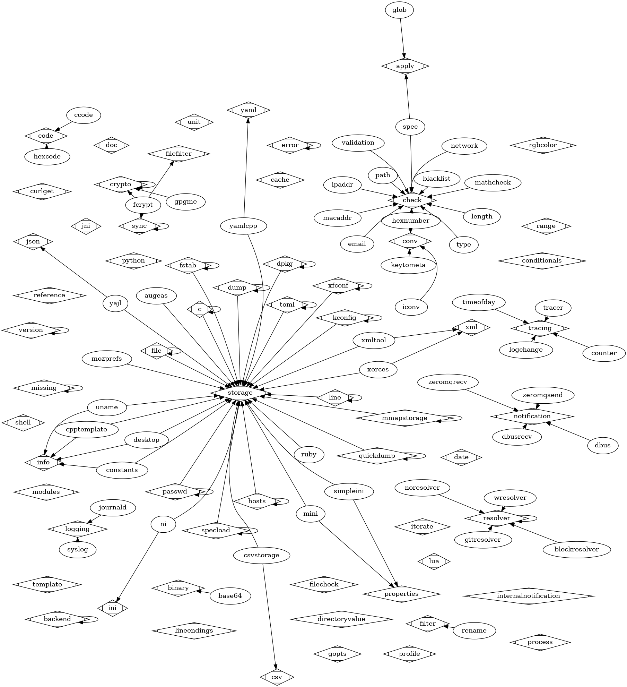

Multiple plugins can be mounted into the key database (KDB). On every access to the key data base they are executed and thus can change the functionality and behavior.
Unlike Elektra's core the plugins have all kinds of dependencies. It is the responsibility of the plugin to find and check its dependencies using CMake. If a dependency cannot be found, the plugin will automatically disable itself.
Description
Elektra has a wide range of different plugins. The plugin folders should contain a README.md with further information. (Or follow links below.) The plugins are:

C-Interface
All plugins implement the same interface:
kdbOpen() calls elektraPluginOpen() of every plugin to let them do their initialisation.kdbGet() requests elektraPluginGet() of every plugin in the queried backends to return a key set.kdbSet() usually calls elektraPluginSet() of every plugin in the queried backends to store the configuration.kdbSet() also calls elektraPluginError() for every plugin when an error happens. Because of elektraPluginError(), plugins are guaranteed to have their chance for necessary cleanups.kdbClose() makes sure that plugins can finally free their own resources in elektraPluginClose().
Furthermore, plugins might export symbols:
checkconf can be called during mounting to ensure a plugin has valid configuration.genconf can be called to produce all valid configurations of a plugin.
KDB-Interface
Installation
See INSTALL. Many plugins are already part of the core package libelektra5. The package that includes a plugin which does not belong to the libelektra5 package can be found in it's README.md.
See Also
For an easy introduction, see this tutorial how to write a storage plugin. For more background information of the plugins framework, continue here. Otherwise, you can visit the the API documentation.
Plugins
Backends
Backends provide access to different data sources (e.g. files, databases, network resources)
- backend is the default plugin implementing backend functionality for configuration files
- backend_odbc provides access to ODBC data sources for storing configuration data (keys, values, metadata)
Resolver
Before configuration is actually written, the file name needs to be determined (resolvers will be automatically added by kdb mount):
- resolver uses advanced POSIX APIs to handle conflicts gracefully
- noresolver does not resolve as no file name is needed (for non-file storage plugins)
- wresolver minimalistic resolver for non-POSIX systems
Furthermore, there are following experimental resolvers:
- blockresolver resolves tagged blocks inside config files
- curlget fetches configuration file from a remote host
- gitresolver checks out and commits files to a local Git repository
Storage
Are responsible for reading writing the configuration to configuration files.
Read and write everything a KeySet might contain:
- dump makes a dump of a KeySet in an Elektra-specific format
- quickdump uses binary portable format based on dump, but more efficient
- mmapstorage uses binary, not portable memory mapped file for a high performance storage
Read (and write) standard config files:
- toml reads and writes data using a parser generated by Flex and Bison
- hosts reads/writes hosts files
- kconfig reads/writes KConfig ini files
- line reads/writes any file line by line
- yajl reads/writes JSON.
- augeas reads/writes many different configuration files using the Augeas library
- xfconf reads/writes to arbitrary xfconf channels
Using semi-structured data for config files, mainly suitable for spec-namespace (put a focus on having nice syntax for metadata):
- ni parses INI files based on (including metadata)
Only suited for import/export:
- mini dependency free, line based key-value storage plugin.
- simpleini line-based key-value pairs with configurable format (without sections). Only works on glibc systems.
- xerces uses XML (without a specific schema).
- xmltool uses XML in the deprecated Elektra XML schema for importing configuration from Elektra 0.7.
- c writes Elektra C-structures (
ksNew(.. keyNew(...)
- ansible writes the given KeySet as Ansible Playbook that uses the ansible-libelektra module
Plugins that just show some functionality, (currently) not intended for productive use:
- csvstorage for csv files
- dpkg reads /var/lib/dpkg/{available,status}
- file reads and writes a file from/to a single key
- fstab for fstab files.
- mozprefs for Mozilla preference files
- passwd for passwd files
- specload calls an external application to request its specification, depends on quickdump
- yamlcpp reads and writes data in the YAML format using yaml-cpp
System Information
Information compiled in Elektra:
- version is a built-in plugin directly within the core so that it cannot give wrong version information
- constants various constants fixed when Elektra was compiled
- desktop contains information which desktop is currently running
Providing information found on the system not available in persistent files:
- uname information from the uname syscall.
Filter
Filter plugins process keys and their values in both directions. In one direction they undo what they do in the other direction. Most filter plugins available now encode and decode values. Storage plugins that use characters to separate key names, values or metadata will not work without them.
Rewrite unwanted characters within strings (code-plugins):
- ccode using the technique from arrays in the programming language C
- hexcode using hex codes
Rewrite unwanted characters within binary data (binary-plugins):
- base64 using the Base64 encoding scheme (RFC4648)
Other filters:
- crypto encrypts / decrypts confidential values
- fcrypt encrypts / decrypts entire files
- gpgme encrypts / decrypts confidential values (with GPGME)
- iconv makes sure the configuration will have correct character encoding
Experimental transformations (are not recommended to be used in production):
- directoryvalue converts directory values to leaf values
- hexnumber converts between hexadecimal and decimal
- keytometa transforms keys to metadata
- rename renames keys according to different rules
- profile renames keys according to current profile
Notification and Logging
Log/Send out all changes to configuration to:
- dbus sends notifications for every change via dbus
notification
- journald logs key database changes to journald
- syslog logs key database changes to syslog
- zeromqsend sends notifications for every change via ZeroMQ sockets
notification
Notification of key changes:
- internalnotification get updates automatically when registered keys were changed
- dbusrecv receives notifications via dbus
notification
- zeromqrecv receives notifications via ZeroMQ sockets
notification
Debug
Trace everything that happens within KDB:
- counter count and print how often a plugin is used
- timeofday prints timestamps
- tracer traces all calls
- iterate iterate over all keys and run exported functions on tagged keys
- logchange prints the change of every key on the console
Checker
Copies metadata to keys:
- glob using globbing techniques (needed by some plugins)
- spec copies metadata from spec namespace (the standard way)
Plugins that check if values are valid based on metadata (typically copied by the spec plugin just before) to validate values:
- type type checking (CORBA types) with enum functionality
- ipaddr checks IP addresses using regular expressions
- email checks email addresses using regular expressions
- network by using network APIs
- path by checking files on file system
- unit validates and normalizes units of memory (e.g. 20KB to 20000 Bytes)
- blacklist blacklist and reject values
- length validates that string length is less or equal to given value
The same but experimental:
- conditionals by using if-then-else like statements
- date validates date and time data
- mathcheck by mathematical expressions using key values as operands
- macaddr checks if MAC addresses are valid and normalizes them
- range checks if a value is within a given range
- reference checks if a value is a valid reference to another key
- rgbcolor validates and normalizes hexcolors
- validation by using regex
Other validation mechanisms not based on metadata:
- filecheck does sanity checks on a file
- lineendings tests file for consistent line endings
Interpreter
These plugins start an interpreter and allow you to execute a script in an interpreted language whenever Elektra’s key database gets accessed. Note that they depend on the presence of the respective binding during run-time:
- jni java plugins started by jni, works with jna plugins
- lua Lua plugins
- python Python 3 plugins
- ruby Ruby plugins
- shell executes shell commandos
Other Important Plugins
- cache caches keysets from previous
kdbGet() calls
- sync uses POSIX APIs to sync configuration files with the hard disk
- gopts global plugin to automatically call
elektraGetOpts
- process proxy plugin that uses separate executables as plugin implementations
- recorder is the plugin used to implement session recording
Plugins for Development
- template to be copied for new plugins
- cpptemplate a template for C++ based plugins
- doc contains the documentation of the plugin interface
- error yields errors as described in metadata (handy for test purposes)
Internal Plugins
Internally used and hard coded into libelektra-kdb. Don't try to use manually.
Deprecated Plugins
Please avoid, if possible, to use following plugins: